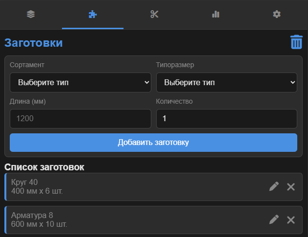

1. Введение
Приложение "Линейный Раскрой" предназначено для оптимизации раскроя длинномерных материалов (арматура, профиль, трубы и т.д.) на заготовки заданных размеров. Оно помогает минимизировать отходы, эффективно использовать остатки и вести учет материалов на складе.
2. Режимы работы
Приложение может работать в двух режимах, которые переключаются в Настройках → Режим работы:
- Складской режим (по умолчанию): Полноценный режим с учетом материалов на складе, остатков и сортамента. Требует заполнения вкладок "Материал" и "Заготовки". Идеально подходит для ведения полного учета.
- Простой режим: Идеален для быстрых расчетов без ведения склада. В этом режиме вкладка "Материал" скрыта. Вы просто добавляете нужные заготовки, а программа сама рассчитывает, сколько стандартных хлыстов (длины которых указаны в настройках) потребуется для их изготовления.
3. Основные разделы (вкладки)
3.1. Вкладка "Материал" (Складской режим)
Здесь вы управляете своим складом — добавляете хлысты и остатки, которые будут использоваться для раскроя. Вкладка доступна только в "Складском режиме".

- Добавление материала: Выберите Сортамент и Типоразмер, укажите Длину и Количество.
- Остатки: Если вы добавляете не стандартный хлыст, а полезный остаток с предыдущих раскроев, установите галочку "Остаток".
- Список "На складе": Отображает все материалы. Остатки подсвечиваются оранжевым. Вы можете редактировать () или удалять () любую позицию.
3.2. Вкладка "Заготовки"
На этой вкладке вы формируете список деталей, которые необходимо изготовить.
- Добавление заготовки:
- В Складском режиме укажите Сортамент и Типоразмер, совпадающие с материалом на складе.

- В Простом режиме поля "Сортамент" и "Типоразмер" скрыты, нужно указать только длину и количество.
3.3. Вкладка "Раскрой"
Это главный экран, где происходит расчет, просмотр и редактирование карт раскроя.

- Расчет: Нажмите "Рассчитать раскрой" для автоматического создания плана.
- Группировка: Одинаковые карты раскроя автоматически группируются для компактности (например, "Типовой раскрой x5 шт.").
- Спецификация (): Нажмите на иконку списка в заголовке хлыста, чтобы увидеть перечень деталей. Клик по детали в списке подсветит её на схеме.
- Информация о дефиците: Если материала не хватило, система покажет, что нужно докупить.
- Ручное редактирование (): Нажмите на иконку карандаша в заголовке карточки материала, чтобы перейти в режим редактирования. Это дает полный контроль над раскладкой.
- Выбор хлыста/группы: Кликните на хлыст или группу, чтобы выбрать её для добавления деталей. Выбранный элемент подсветится синей рамкой.
- Добавление детали: Выделите хлыст или группу (она подсветится синим), затем кликните на деталь в списке "Неразмещенные заготовки".
- Удаление детали: Кликните на деталь прямо на визуализации хлыста, чтобы вернуть её в список неразмещенных.
- Добавить хлыст (): Добавляет новый стандартный хлыст в план раскроя.
- Очистить план (): Удаляет все карты раскроя для данного материала, возвращая все детали в неразмещенные.
- Разгруппировать (): Позволяет редактировать хлысты из типовой группы по отдельности.
- Сгруппировать (): Позволяет снова объединить одинаковые расклады в типовые группы.
- Завершить (): Выход из режима редактирования с сохранением изменений.
- Экспорт в PDF (): После расчета плана, нажмите на иконку PDF в заголовке секции, чтобы сохранить карты раскроя в виде файла. Настройки экспорта находятся на вкладке "Настройки".
- Применение плана (Складской режим): После того как план готов, нажмите "Применить и списать материал". Это действие спишет использованные хлысты и заготовки со склада и добавит в него новые полезные остатки. Кнопка доступна только в "Складском режиме".
3.4. Вкладка "Статистика"
Здесь отображается подробная аналитика по последнему выполненному раскрою.
- КИМ: Ключевой показатель — Коэффициент Использования Материала.
- Детализация: Точные цифры по деталям, остаткам и отходам.
- Статус: В заголовке указывается, для какого расчета показана статистика: для предварительного или по последнему списанию.
- Дефицит: Если после расчета остались неразмещенные детали, здесь будет показан подробный список материалов, которые нужно докупить.
3.5. Вкладка "Настройки"
На этой вкладке вы можете настроить поведение приложения под свои нужды.
- Управление сортаментом: Создавайте свои типы материалов (например, "Труба профильная", "Арматура") и их типоразмеры ("20x20", "12").
- Ширина реза (kerf): Толщина пила или резака. Учитывается во всех расчетах.
- Мин. остаток: Остатки меньше этого значения будут считаться бесполезными отходами.
- Длины для расчета дефицита: Укажите через запятую длины стандартных хлыстов, которые вы можете купить (например,
6000, 12000). Это ключевая настройка для "Простого режима" и для расчета дефицита в обоих режимах.
- Стратегия раскроя:
- Минимальный отход: Алгоритм старается подобрать хлыст так, чтобы после отреза детали остался наименьший возможный остаток. Это помогает эффективнее использовать каждый хлыст.
- Сначала остатки: Алгоритм в первую очередь пытается использовать остатки со склада, даже если это приведет к большему общему расходу материала. Помогает избавиться от накопленных остатков.
- Настройки печати (PDF): Позволяют настроить внешний вид и содержание экспортируемого файла.
- Шаблон имени файла: Задайте имя файла. Можно использовать
{date} для автоматической подстановки текущей даты.
- Включать неразмещенные детали: Добавляет на последнюю страницу сводку по деталям, которые не удалось разместить, и расчет дефицита.
- Группировать карты раскроя: Объединяет одинаковые карты в одну с указанием количества (например, "Типовой раскрой x5 шт.").
- Ориентация страницы: Выберите книжную или альбомную ориентацию.
- Качество PDF: Регулирует степень сжатия изображений, влияя на размер и качество файла.
- Режим работы: Позволяет переключаться между "Складским" и "Простым" режимами.